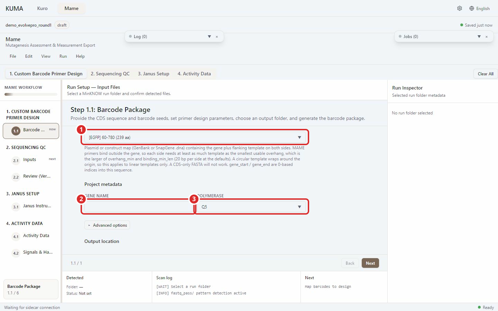
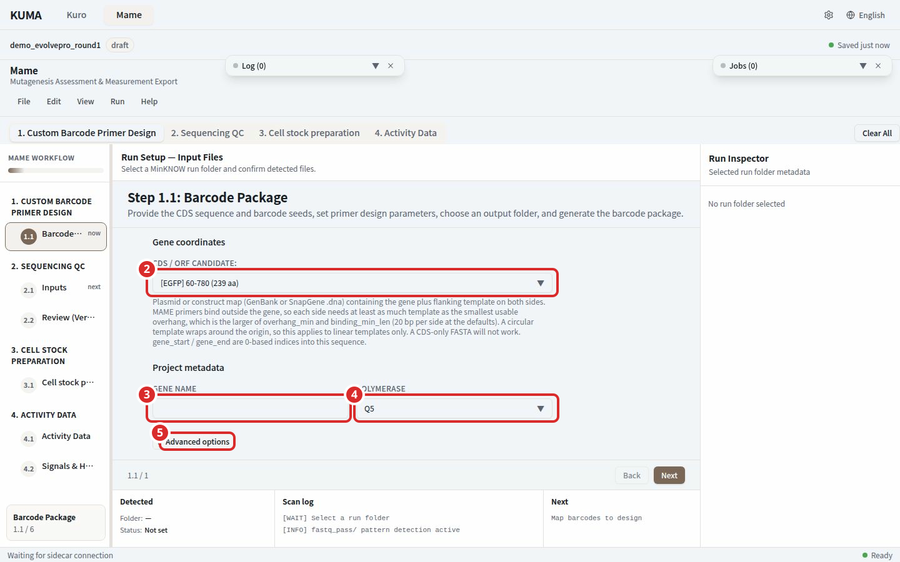
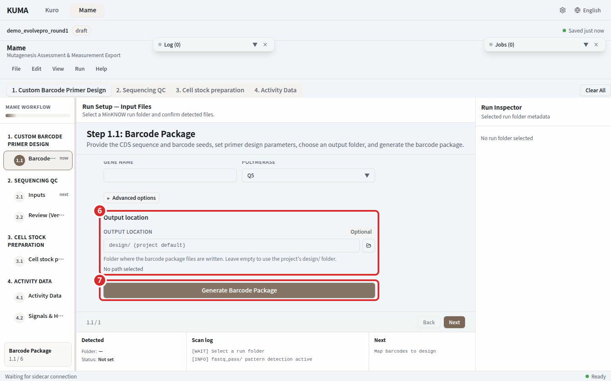

Step 1. Barcode Setup¶

Numbered marks: 1 Input files

Numbered marks: 2 Gene coordinates; 3 Gene name; 4 Polymerase; 5 Advanced options

Numbered marks: 6 Output location; 7 Generate Barcode Package
This screen builds a MAME barcode package from a CDS sequence and a barcode seed file. The amplicon reference and the barcode table it writes become the input of the step 2 analysis.
What to do¶
- In Input files, choose the CDS sequence and the barcode seeds xlsx.
- Check Gene coordinates. When a CDS candidate is found in the file, it appears in a dropdown and fills the coordinates for you.
- In Project metadata, enter the gene name and pick a polymerase.
- Open Advanced options if the overhang or binding parameters need changing.
- Choose an Output location. Leave it empty and the files go to the
design/folder of the project. - Press Generate Barcode Package.
Inputs¶
| Input | Format | Required |
|---|---|---|
| CDS sequence | .fa .fasta .gb .gbk .dna |
Required |
| Barcode Seeds xlsx | .xlsx holding the fwd_1..12 and rev_1..8 seed sequences |
Required |
| Gene coordinates | gene_start, gene_end (0-based, end exclusive) | Required |
| Gene name | Short identifier used in the output filenames | Required |
| Polymerase | Q5 / Taq / Phusion / KOD | Defaults to Q5 |
| Output location | Folder | Optional |
The CDS sequence must be a plasmid or construct map that carries flanking template on both sides of the gene. MAME primers bind outside the gene and never inside it, so each side needs at least as much template as the smallest usable overhang, which is the larger of overhang_min and binding_min_len (20 bp per side at the defaults), not the full overhang_max. On a linear template the reach is clamped to the sequence ends, and a circular template wraps around the origin, so the requirement applies to linear templates only. A CDS-only FASTA will not work.
The two search parameters both measure overhang: how far the outer end of the amplicon reaches past the CDS boundary. That is the same distance trim_flank_bp and the terminal variant advisories use. The gap between a primer and the gene is not configurable and is always zero or more, because a base a primer covers is read from the primer rather than from the template. Since overhang equals that gap plus the binding length, an overhang_min below binding_min_len describes a range no primer can occupy and is reported as a warning. The default search bounds are 20 and 60.
For GenBank input, only the first record and its CDS annotations are loaded. Export a desired later record with its flanking template as a separate GenBank file; annotations from different records cannot be combined with the first template.
The Template topology choice appears only for a plain FASTA (.fa, .fasta), because a FASTA records no topology. A GenBank or SnapGene file carries its own topology, so the choice stays hidden for those.
Primer quality checks¶
A barcode primer binding site has to clear the same five criteria a KURO SDM primer does before it is selected: the Tm window (55-68 C by default), the 3' terminal GC clamp, hairpin, homodimer and off-target binding. Hairpin and homodimer are rejected when the primer3 structure Tm exceeds 40.0 C. Off-target scans the whole template that was loaded and rejects a candidate when any site outside the intended binding position binds at 45.0 C or above. The thresholds match the KURO defaults and are not exposed on screen. Hairpin and homodimer use fixed design-scale concentrations rather than the polymerase profile, so changing the enzyme cannot change which molecule gets ordered. The Tm window keeps following the polymerase profile as before.
The off-target search space is whatever file was loaded. A plasmid or construct map that carries the flanking sequence is searched the way KURO searches a template; a FASTA holding the CDS alone offers that much less sequence to search.
When no candidate clears all five, the design is not refused. The candidate whose Tm is closest to the target is selected instead and a warning states which check it failed and at what temperature. Read that warning before ordering the primers.
The molecules that are actually synthesised are the 20 oligos formed by a seed joined to a binding site. Hairpin and homodimer are run over those full oligos too, and everything above 40.0 C is collected into a single warning. That pass is advisory and never changes the binding site it chose: kuma only chooses binding sites, and each barcode seed is a fixed input sequence from the seeds file, so the program has no other seed to swap in. Check the full sequence of every oligo the warning names before ordering. To move a binding site elsewhere, change the search range or the binding length under Advanced options and generate again. An oligo longer than 60 nt is reported as unchecked, since primer3 refuses the calculation at that length.
Warnings and errors¶
| What the screen says | What to do |
|---|---|
| Could not read gene annotations from this file | Check whether the GenBank or SnapGene file is damaged, then pick another file |
| No CDS detected. Enter coordinates manually. | Type gene_start and gene_end yourself |
| gene_end must be greater than gene_start. | Check that the two coordinates are not swapped |
| Primer design may fail on a linear template | Template outside the gene is shorter than the smallest usable overhang. Lower binding length or overhang_min, or use a file with longer flanking sequence. The button stays usable |
| A project must be open to generate a package | Choose Open Project from the File menu. With no project the button stays disabled |
| Cannot proceed, missing required input | Fill in the items listed in the toast. The button is clickable even with empty fields and answers with this notice |
| Generation failed | Read the reason in the notice. Pressing again without changing a parameter gives the same outcome |
When the output folder already exists, a confirmation asks before anything is overwritten.
Generated files¶
On success, Generated files lists three entries.
- Barcode table (xlsx)
- Amplicon reference (FASTA)
- Run context (JSON)
Open folder opens the save location. Once generation finishes, the amplicon reference becomes the step 2 reference and the barcode table becomes the custom barcode file automatically. Pressing Next before the package exists blocks the move.